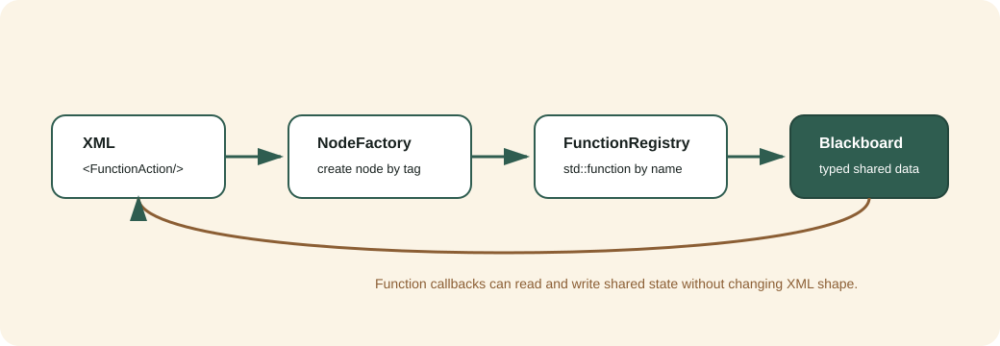

函数手册¶
这份手册对应源码里的三条主线：
bt_core：行为树执行、节点工厂、端口和黑板。bt_nodes：常用控制/装饰/动作/条件/数据节点，以及函数注册表。bt_ros2：ROS2 topic 数据录入、条件判断和命令发布。
核心模型¶
{kind=link}

行为树执行时只认四个概念：
概念 |
代码入口 |
作用 |
|---|---|---|
工厂 |
|
注册类型名，按 XML 标签创建节点。 |
黑板 |
|
节点之间共享类型安全数据。 |
端口 |
|
描述节点输入输出，供 XML、编辑器和运行期绑定。 |
函数注册表 |
|
把普通 C++ 函数以名字暴露给 XML 节点。 |
XML 端口有两种语义：
<PrintMessage message="hello"/>
<PrintMessage message="{greeting}"/>
第一行是字面量，只保存在当前节点的 port_values；第二行表示从黑板 key
greeting 读取。严格 XML 会拒绝未声明属性，因此除保留的 name 外，每个可在
XML 配置的属性都必须由节点的 providedPorts() 声明。
常用节点目录¶
节点 |
类型 |
用途 |
|---|---|---|
|
Control |
子节点从左到右全部成功才成功。 |
|
Control |
子节点从左到右遇到第一个成功即成功。 |
|
Control |
逻辑并行 tick 子节点，按阈值判定。 |
|
Control |
每拍重评高优先级输入，并抢占低优先级运行分支。 |
|
Decorator |
重试失败或重复成功。 |
|
Decorator |
强制改写子节点终态。 |
|
Decorator |
按 critical/normal/background 或自定义周期降低子树 tick 频率。 |
|
Action |
写黑板数据。 |
|
Action |
递增计数并写回黑板。 |
|
Action |
删除黑板 key（幂等 |
|
Condition |
从黑板读取数据并判断。 |
|
Condition |
读黑板数值与阈值按 |
|
Condition |
判断黑板是否存在某 key。 |
|
Condition |
做频率限制，适合命令节流。 |
|
Action（异步） |
到时前持续 |
|
Condition |
自首拍起单调到时后放行。 |
|
Action |
分级诊断日志埋点，恒 |
|
Action / Condition |
按函数名调用 C++ 函数注册表。 |
内置节点共 34 个，完整端口表与失败语义见 节点目录；调度组合见 单树优先级与分级 Tick 调度。
用单例函数注册表接业务函数¶
适用场景：你已经有一批常用 C++ 函数，不想为每个函数都写一个节点类。把函数注册到单例表，XML 只引用函数名。
#include "function/function_registry.hpp"
bt_nodes::FunctionRegistry::instance().registerAction(
"robot.recharge.command",
[](const bt_nodes::FunctionContext& ctx) {
ctx.blackboard->set<std::string>(ctx.output_key, "start_recharge");
return bt_core::NodeStatus::SUCCESS;
});
对应 XML：
<FunctionAction function="robot.recharge.command"
input="main_dock"
output_key="last_command"/>
端口与失败语义：
端口 |
方向 |
默认 |
说明 |
|---|---|---|---|
|
input |
|
注册函数名；空字符串直接 |
|
input |
|
可选字符串输入，复杂输入建议从 |
|
input |
|
可选输出 key，业务函数写入前应判断是否为空。 |
同名 registerAction 会覆盖旧回调。未知动作函数返回 FAILURE，不会抛异常。
更稳妥的写法：
bt_nodes::FunctionRegistry::instance().registerAction(
"robot.recharge.command",
[](const bt_nodes::FunctionContext& ctx) {
if (!ctx.output_key.empty()) {
ctx.blackboard->set<std::string>(ctx.output_key, "start_recharge");
}
return bt_core::NodeStatus::SUCCESS;
});
条件函数：
bt_nodes::FunctionRegistry::instance().registerCondition(
"robot.battery.low",
[](const bt_nodes::FunctionContext& ctx) {
return ctx.blackboard->get<double>("battery_level").value_or(1.0) < 0.20;
});
对应 XML：
<FunctionCondition function="robot.battery.low"/>
FunctionCondition 端口同 FunctionAction。空 function 或未知条件函数都会返回 FAILURE；注册表内部条件回调返回 false 时也映射为 FAILURE。
这个设计组合了三件事：
单例：
FunctionRegistry::instance()统一保存函数引用。工厂：
FunctionAction和FunctionCondition仍由NodeFactory创建。函数引用：注册表保存
std::function，XML 通过函数名解耦实现。
三模式协作：完整回充示例¶
examples/03_function_registry_recharge.cpp``（可执行 ``example_function_recharge）把上面三件事串成一个可运行的回充闭环，直接回答“从外部拿到电量数据后怎么通过调用完成回充”。它用普通结构体模拟 sensor_msgs/BatteryState，本机无需 ROS2 即可跑通。三模式分工：
模式 |
代码落点 |
负责什么 |
|---|---|---|
单例 |
|
全局唯一注册表，启动时登记业务函数，处处按名取用。 |
工厂 |
|
按 XML 标签创建 |
生成器引用函数 |
注册的 lambda / 普通函数 |
“读电量、判低电、发命令、通知完成”写成函数，XML 只引用函数名。 |
真实运行输出（场景 A 电量充足不回充，场景 B 低电触发闭环）：
已注册业务函数: 3 个动作, 1 个条件
=== 场景 A：电量 80%（充足） ===
[readBattery] ... 读到电量=80%
根结果: SUCCESS | recharge_done=false
=== 场景 B：电量 12%（低电量，触发回充） ===
[readBattery] ... 读到电量=12%
[isLowBattery] ... 低电量, 需要回充
[sendRechargeCommand] ... start_recharge:main_dock
[notifyDone] ... task_done:recharge
根结果: SUCCESS | recharge_done=true
完整的三模式讲解、数据流图、逐节点闭环表和“从示例到真实 ROS2”的迁移路径见 单例 + 工厂 + 生成器引用函数。
写一个专用节点¶
当业务稳定后，可以沉淀成专用节点，编辑器也能看到更明确的端口说明。
class RequestDockNode : public bt_core::ActionNode {
public:
using bt_core::ActionNode::ActionNode;
static bt_core::PortsList providedPorts() {
return bt_core::makePorts(
bt_core::InputPort<std::string>("target", "main_dock", "目标充电桩"));
}
bt_core::NodeStatus tick() override {
auto target = getInput<std::string>("target").value_or("main_dock");
blackboard()->set<std::string>("last_dock_target", target);
return bt_core::NodeStatus::SUCCESS;
}
};
注册：
factory.registerNodeType<RequestDockNode>("RequestDock");
XML：
<RequestDock target="main_dock"/>
开发建议¶
临时业务逻辑先用
FunctionAction/FunctionCondition。高频稳定逻辑沉淀成专用节点类。
跨节点数据统一走黑板，不要用全局变量传状态。
ROS2 订阅节点复用
topic、timeout_ms、qos_depth、qos_profile；发布节点还可用subscriber_wait_timeout_ms等观察者。需要“发一次、跨 tick 等结果、超时、halt/retry”的动作参考 ROS2 回充教程 中的
RechargeTask，不要用 cooldown 拼接两个瞬时节点。每个新节点至少补一个非 ROS 单测；ROS2 Humble 按 ROS2 回充教程 验证真实消息闭环。Jazzy 状态：unverified: ROS 2 Jazzy is not installed on this machine.